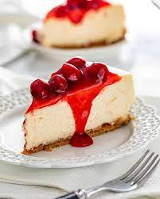

Dunkin Hines Cheesecake

A delicious cherry cheesecake my mother made when I was a child.
ingredients
- 1 box yellow cake mix
- 2 Tbl. vegetable oil
- 2 pkg. (8oz. each) cream cheese, softened
- 1/2 cup sugar
- 4 large eggs
- 1 1/2 cup milk
- 3 Tbl. lemon juice
- 1 tsp. vanilla extract
- 1 can (1 lb.,5 oz.) cherry pie filling
Steps
- Preheat oven to 300. Measure out 1 cup of dry cake mix; set aside.
- In large mixing bowl stir together remaining cake mix, 1 egg and vegetable oil (mixture will be crumbly).
Press crust mixture evenly into bottom and 3/4 way up the sides of a greased 13 x 9 inch pan.
- In same bowl, blend cream cheese and sugar together. Add 3 eggs and reserved cake mix; beat 1 minute at
mediumspeed. At low speed, gradually add milk, lemon juce and vanilla; mix until smooth. pour into crumb crust.
- Bake at 300, for 45 - 55 minutes, until center is firm. Cool to room temperature. Spoon cherry pie filling over
cheesecake; cover and chill 1 hour before serving.